<meta name="viewport" content="width=device-width, initial-scale=1">
<link rel="stylesheet" href="github-markdown.css">
<style>
	.markdown-body {
		box-sizing: border-box;
		min-width: 200px;
		max-width: 980px;
		margin: 0 auto;
		padding: 45px;
	}

	@media (max-width: 767px) {
		.markdown-body {
			padding: 15px;
		}
	}
</style>
<article class="markdown-body">


<h2 id="materials-and-shading-workshop">Materials and Shading Workshop</h2>
<p>Prof. Dr. Lena Gieseke | l.gieseke@filmuniversitaet.de | Film University Babelsberg <em>KONRAD WOLF</em></p>
<h2 id="day-1">Day 1</h2>
<ul>
<li><a href="#materials-and-shading-workshop">Materials and Shading Workshop</a></li>
<li><a href="#day-1">Day 1</a></li>
<li><a href="#the-workshop">The Workshop</a></li>
<li><a href="#workshop-topics">Workshop Topics</a></li>
<li><a href="#learning-objectives">Learning Objectives</a></li>
<li><a href="#lets-start">Let’s Start</a></li>
<li><a href="#today">Today</a></li>
<li><a href="#intro">Intro</a>
<ul>
<li><a href="#3d-engines">3D Engines</a></li>
<li><a href="#fragment-shader">Fragment Shader</a></li>
</ul></li>
<li><a href="#3d-engine-environment">3D Engine Environment</a>
<ul>
<li><a href="#anatomy-of-a-3d-rendering">Anatomy of a 3D Rendering</a></li>
<li><a href="#materials--shading">Materials &amp; Shading</a></li>
<li><a href="#texturing">Texturing</a>
<ul>
<li><a href="#procedural-texturing">Procedural Texturing</a></li>
</ul></li>
<li><a href="#shading">Shading</a></li>
<li><a href="#lighting">Lighting</a></li>
</ul></li>
<li><a href="#but-first-lets-look-at-some-materials--">But first: Let’s Look At Some Materials 🔎</a>
<ul>
<li><a href="#tasks">Tasks</a></li>
</ul></li>
<li><a href="#lighting-and-shading">Lighting and Shading</a></li>
<li><a href="#local-illumination">Local Illumination</a>
<ul>
<li><a href="#view-and-light-vectors">View and Light Vectors</a></li>
<li><a href="#multiple-lights">Multiple Lights</a></li>
<li><a href="#what-are-we-summing-up">What Are we Summing Up?</a>
<ul>
<li><a href="#on-a-side-note-color">On a Side Note: Color</a></li>
</ul></li>
<li><a href="#materials">Materials</a>
<ul>
<li><a href="#reflections">Reflections</a></li>
<li><a href="#diffuse-reflection">Diffuse Reflection</a></li>
<li><a href="#specular-reflection">Specular Reflection</a></li>
<li><a href="#full-specular-reflection-mirror-reflection">Full Specular Reflection (Mirror Reflection)</a></li>
<li><a href="#measured-diffuse-surface-reflection">Measured Diffuse Surface Reflection</a></li>
<li><a href="#measured-glossy-surface-reflection">Measured Glossy Surface Reflection</a></li>
<li><a href="#measured-layered-diffuse--glossy-surface-reflection">Measured Layered (diffuse / glossy) Surface Reflection</a></li>
</ul></li>
<li><a href="#diffuse-reflection-1">Diffuse Reflection</a></li>
<li><a href="#diffuse-reflection---light-direction">Diffuse Reflection - Light Direction</a></li>
<li><a href="#lamberts-cosine-law">Lambert’s Cosine Law</a></li>
<li><a href="#lambert-material">Lambert Material</a></li>
<li><a href="#specular-reflection-1">Specular Reflection</a></li>
<li><a href="#reflection-vector">Reflection Vector</a>
<ul>
<li><a href="#specular-reflection---shininess-exponent">Specular Reflection - Shininess exponent</a></li>
</ul></li>
<li><a href="#specular-material">Specular Material</a></li>
</ul></li>
<li><a href="#phong-model">Phong Model</a>
<ul>
<li><a href="#the-end-of-day-1">The End of Day 1</a></li>
</ul></li>
<li><a href="#">🤓</a></li>
</ul>
<h2 id="the-workshop">The Workshop</h2>
<p>Materials &amp; Shading is a complex topic, enough for a term…</p>
<ul>
<li>Intro Materials and Shading</li>
<li>Shading vs. Shader</li>
<li>Local Illumination</li>
<li>Global Illumination</li>
<li>NPR Materials</li>
<li>Advanced Material Properties</li>
<li>Physically-based Shading</li>
<li>Material Interfaces</li>
<li>Modern Fragment Shaders</li>
<li>…</li>
</ul>
<h2 id="workshop-topics">Workshop Topics</h2>
<ul>
<li>Intro to Shading</li>
<li>Local Illumination</li>
<li>Local Shading Models</li>
<li>Implementation of p5’s materials</li>
<li>Toon shading</li>
<li>Creative shading</li>
<li>Material Interfaces</li>
</ul>
<h2 id="learning-objectives">Learning Objectives</h2>
<ul>
<li>Understand what shading is</li>
<li>Grasp core theoretical concepts of shading, lighting and rendering</li>
<li>Be able to implement basic shading concept within a 3D engine</li>
<li>Be able to go from there to explore creative shading options</li>
<li>Understand the basic principles of shading interfaces</li>
<li>Understand Houdini’s shading interface</li>
<li>Understand modern shader development and the capabilities of fragment shaders</li>
</ul>
<h2 id="lets-start">Let’s Start</h2>
<p>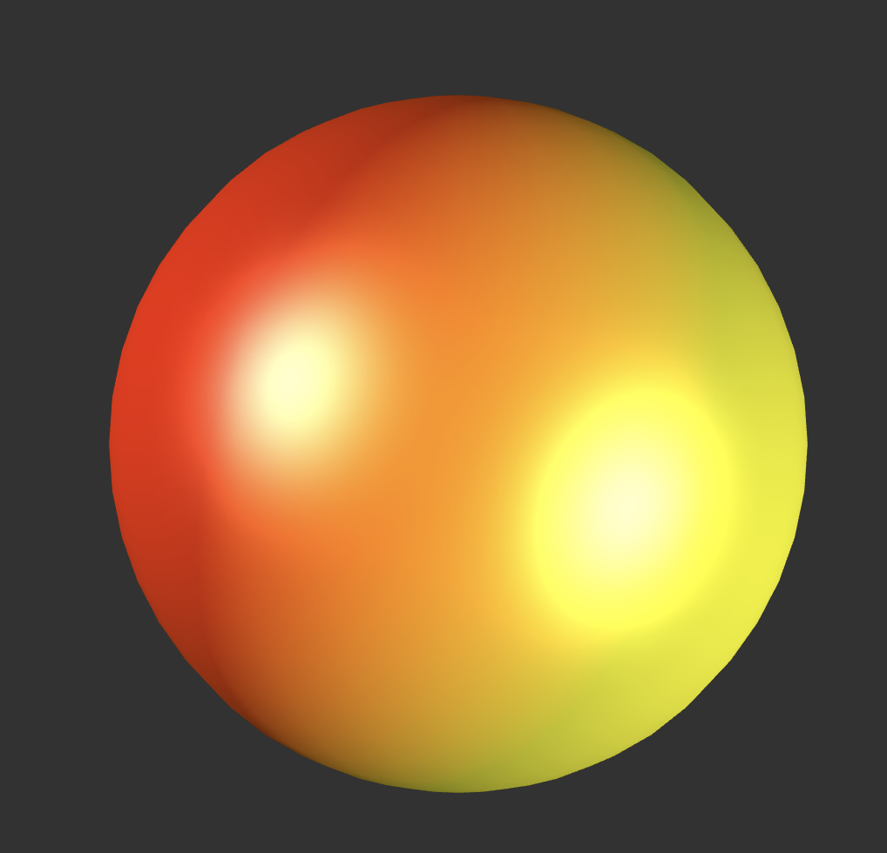 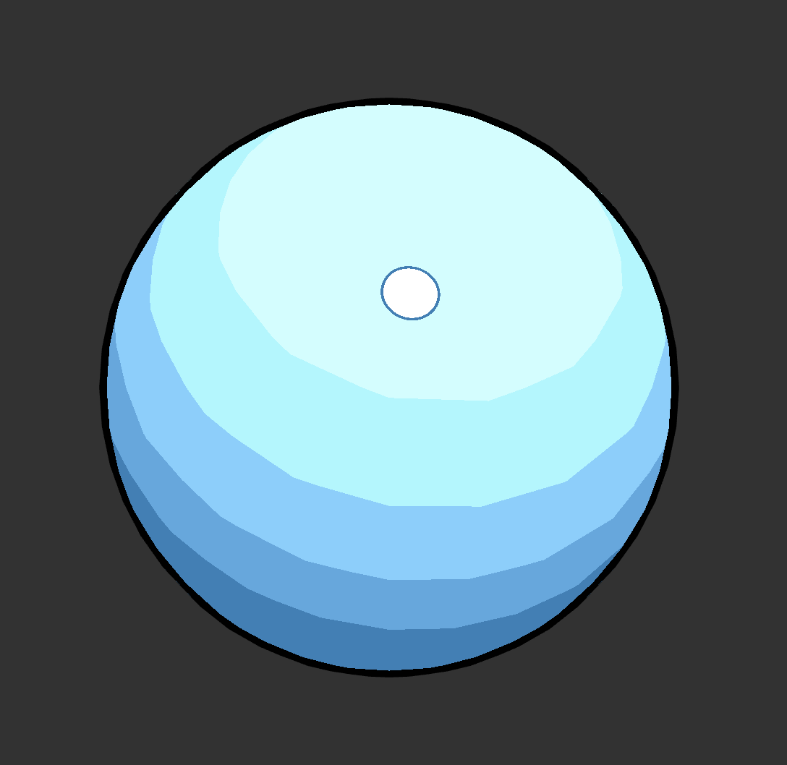</p>
<p>Looks simple enough, right? 😎</p>
<h2 id="today">Today</h2>
<ul>
<li>Understand Shading and its properties</li>
<li>Local Illumination</li>
</ul>
<h2 id="intro">Intro</h2>
<h3 id="d-engines">3D Engines</h3>
<p>We start to think about materials and shading in a 3D engine context.</p>
<p>This means we plug our shading development into a given environment such as p5, Unity, Houdini etc. and work with given assets such lights or material properties.</p>
<p>For example, a p5 scene is straight-forward to use with almost no overhead and it even gives reasonable errors in a shader.</p>
<h3 id="fragment-shader">Fragment Shader</h3>
<p>In contrast to this stands modern fragment shader development with aims to do as much a possible within the fragments shader itself, such as ray-tracing, geometry and animation.</p>
<p>However options are still limited in comparison to working within a 3D software.</p>
<p>This is the best option for for abstracted, simplified and artistic scenes and whenever performance is crucial (e.g. in a performance scenario).</p>
<h2 id="d-engine-environment">3D Engine Environment</h2>
<h3 id="anatomy-of-a-3d-rendering">Anatomy of a 3D Rendering</h3>
<p></p>
<p>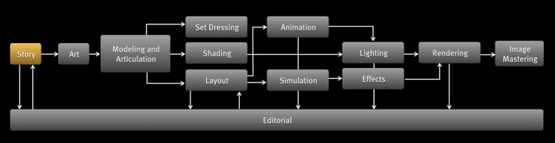 [Pixar, 2015]</p>
<h3 id="materials-shading">Materials &amp; Shading</h3>
<p>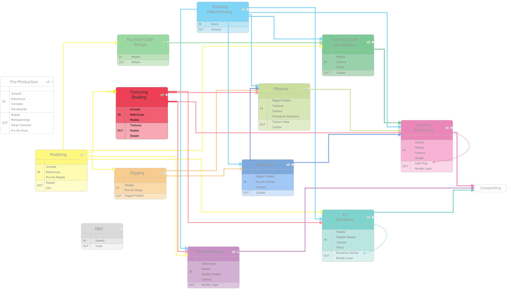</p>
<p></p>
<p><a href="http://zwosta.de">[Gereon Zwosta]</a></p>
<p>In the context of creating a certain look for a model, e.g. to make it seamlessly fit into environment, we need to consider</p>
<ul>
<li>Texturing</li>
<li>Shading</li>
<li>Lighting</li>
<li>Rendering</li>
</ul>
<p><em>On a Side Note:</em> Materials are often considered as the combination of textures and shading properties.</p>
<h3 id="texturing">Texturing</h3>
<p>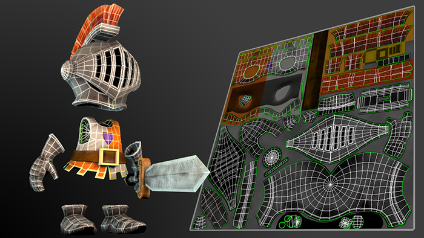 <a href="https://www.pluralsight.com/courses/3ds-max-uv-mapping-fundamentals">[pluralsight]</a></p>
<h4 id="procedural-texturing">Procedural Texturing</h4>
<p>A procedural texture is a texture created using a mathematical description (i.e. an algorithm) rather than directly stored data.</p>
<p>The advantage of this approach is low storage cost, unlimited texture resolution and easy texture mapping.</p>
<p>These kinds of textures are often used for high frequency detail and to model surface or volumetric representations of natural elements such as wood, marble, granite, metal, stone, and others.</p>
<p>As materials are textures + shading properties, you might want to program the texture designs as well.</p>
<p></p>
<p>These days textures are also highly relevant for shading and lighting related effects.</p>
<p>They enable the simulation of near-photorealism in real time by vastly reducing the number of polygons and lighting calculations needed to construct a realistic and functional 3D scene.</p>
<p>There are various more complex mappings such as</p>
<ul>
<li>height mapping,</li>
<li>bump and displacement mapping,</li>
<li>reflection, specular and occlusion mapping.</li>
</ul>
<p>These maps are usually put together and controlled by a <em>materials system</em> of the rendering enging, such as Unity.</p>
<p><a href="https://en.wikipedia.org/wiki/Texture_mapping">[Wikipedia - Texture Mapping]</a></p>
<p>We will not work with procedural textures and texture maps in this workshop.</p>
<h3 id="shading">Shading</h3>
<p>Shading used in drawing means to apply varying level of darkness for the depiction of depth perception.</p>
<p><a href="https:/nitramcharcoal.com/basic-shading-techniques/">[Nitram]</a></p>
<p>In computer graphics, shading does pretty much the same thing: a color (e.g. from texture) is altered by varying levels of darkness (and colors).</p>
<p>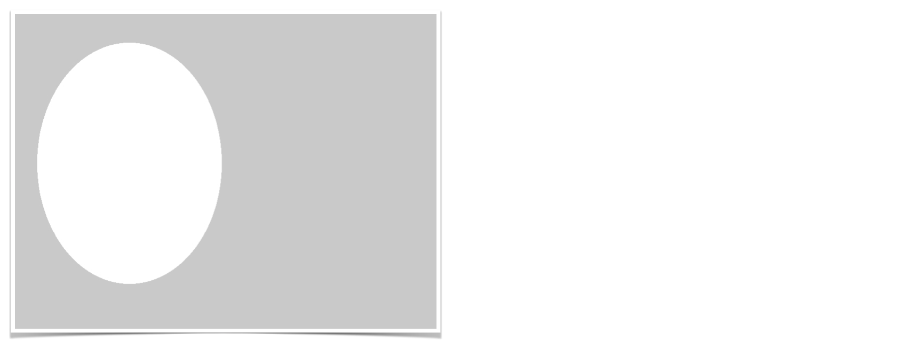</p>
<p>In computer graphics, shading does pretty much the same thing: a color (e.g. from texture) is altered by varying levels of darkness (and colors).</p>
<p></p>
<p>This is done based on characteristics such as</p>
<ul>
<li>the surface’s angle and distance to lights</li>
<li>light properties, and</li>
<li>material properties.</li>
</ul>
<h3 id="lighting">Lighting</h3>
<p>The standard types of light sources supported by all 3D graphics systems come in four varieties: ambient, directional / distant, point, and spot.</p>
<p><a href="http://www.docs/houdini/render/lights.html#lights">[Houdini Reference]</a></p>
<p>The standard types of light sources supported by all 3D graphics systems come in four varieties: ambient, directional / distant, point, and spot.</p>
<p> <a href="https://p5js.#group-Lights,%20Camera">[p5 Reference]</a></p>
<blockquote>
<p>Let’s implement p5’s shading with custom-made shaders!</p>
</blockquote>
<h2 id="but-first-lets-look-at-some-materials">But first: Let’s Look At Some Materials 🔎</h2>
<h3 id="tasks">Tasks</h3>
<ol type="1">
<li>Photograph at least 10 materials, including different shadings.
<ul>
<li>Create a .md with your images.</li>
</ul></li>
<li><p>Describe and compare two interesting shading behaviors in your photos as bullet points.</p>
<ul>
<li>If possible, move the object and see how it reacts to different lighting situations.</li>
<li>How does the shading look like and why?</li>
<li>What kind of highlights does the object have?</li>
<li>How do the highlights change when you move the object?</li>
<li>Add your text to the .md of 1.</li>
</ul></li>
</ol>
<h2 id="lighting-and-shading">Lighting and Shading</h2>
<p>The interaction between light and a surface is a complex physical process.</p>
<p>Photons can be <em>absorbed</em>, <em>reflected</em>, or <em>transmitted</em> when they strike the surface of a material.</p>
<p>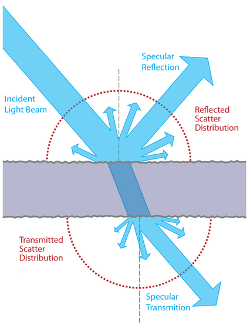<a href="https://en.wikipedia.File:BSDF05_800.png">[Wikipedia]</a></p>
<p>To model this interaction using the whole of today’s knowledge of physics would be far too computationally time-consuming.</p>
<p>Instead, we must settle for models that <strong><em>approximate</em></strong> the expected appearance of a surface.</p>
<blockquote>
<p>Essentially, all models are wrong, but some are useful. – George E. P. Box</p>
</blockquote>
<h2 id="local-illumination">Local Illumination</h2>
<p>One approach to make light-surface interaction more handlebar, is to only consider a <em>local</em> interaction between clearly defined lights, a viewer and a surface point.</p>
<p>This powerful approximation is called <em>local illumination</em> and one of the oldest but still used techniques for shading.</p>
<p></p>
<p><em>Lighting</em> or <em>illumination</em> is used to describe the process by which the color and intensity of light <em>reaching a surface</em> is determined.</p>
<p>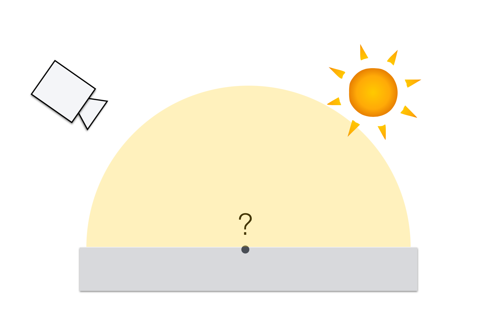</p>
<p><em>Local Illumination</em> considers light only provided directly emitted from a light source, travelling in a straight path to the illuminated point.</p>
<p><a href="https://knowledge.autodesk.com/support/maya-lt/learn-explore/caas/CloudHelp/cloudhelp/2015/ENU/MayaLT/files/BoL-Indirect-global-vs-direct-illumination-htm.html">[Autodesk]</a></p>
<p></p>
<p><em>Shading</em> describes the methods used to determine the color and intensity of light <em>reaching the viewer</em> for each point on a surface.</p>
<p>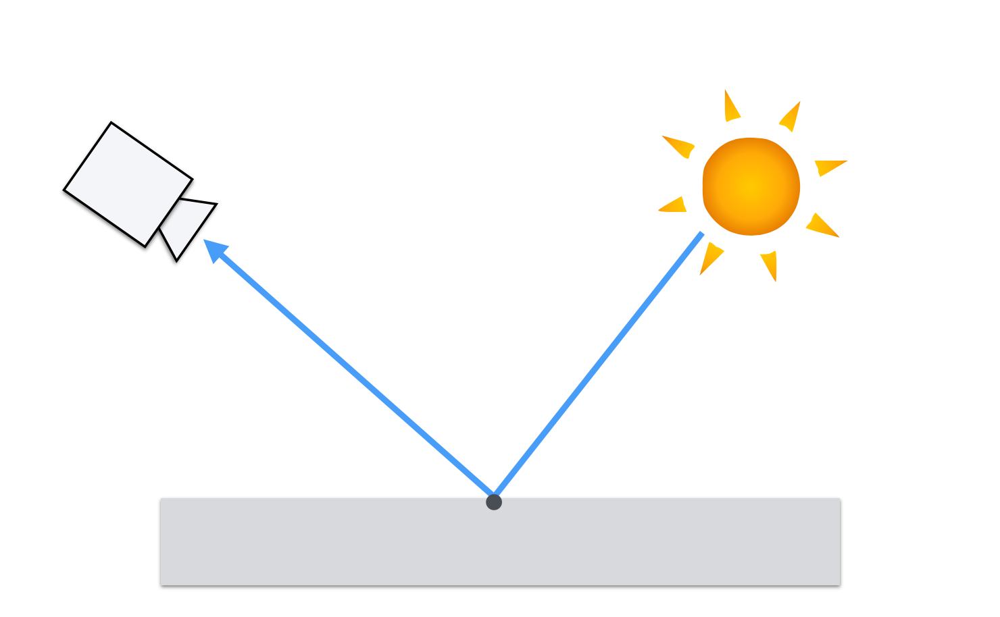</p>
<p>Hence, the final color (the light reaching the viewer) of a surface point depends on the properties of the light sources as well as the reflective characteristics of the surface itself.</p>
<p>This computation can be interpreted as a geometric problem.</p>
<h3 id="view-and-light-vectors">View and Light Vectors</h3>
<p>We interpret the light transport as the radiance traveling along rays, where</p>
<ul>
<li><strong>L</strong> points to the direction the light is coming from,</li>
<li><strong>V</strong> points to the observer and is the direction the light is reflected towards.</li>
</ul>
<p></p>
<p><strong>Make sure that <span class="math inline">||<em>L</em>|| = ||<em>V</em>|| = 1</span> as these are directions! </strong></p>
<p><strong><em>Insight 1</em></strong>: Now we know how to describe the scene setup: with vectors</p>
<h3 id="multiple-lights">Multiple Lights</h3>
<p> [<a href="https://www.scratchapixel.com/lessons/3d-basic-rendering/introduction-to-shading/shading-multiple-lights">Scratchapixel</a>]</p>
<p>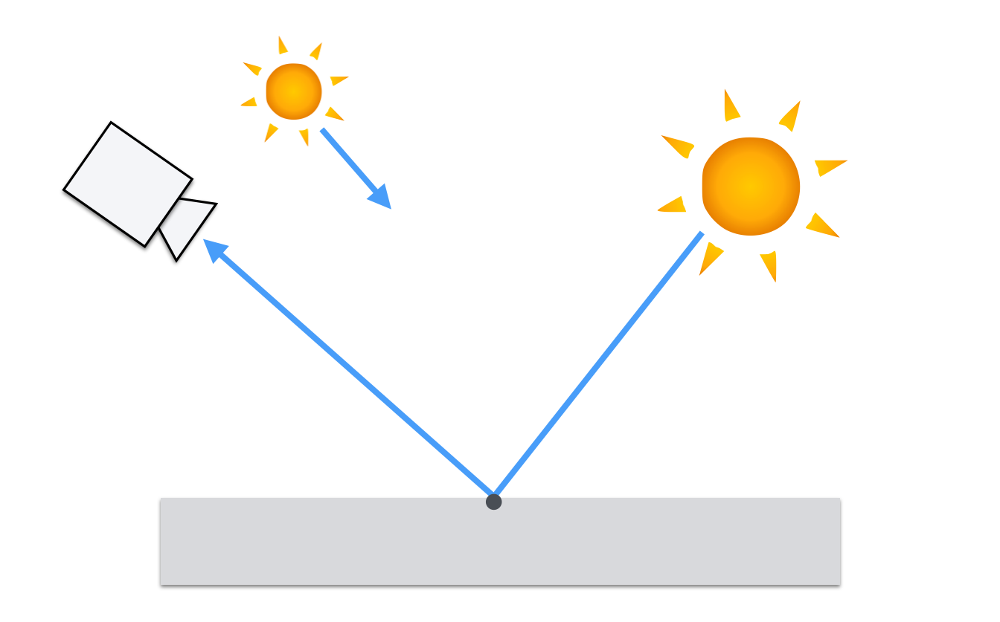</p>
<p>The color that we calculate for a point on a surface is the combination of contributions from <strong><em>all</em></strong> the light sources that illuminate the surface.</p>
<p>Hence, we need to iterate over all lights and collect their values.</p>
<p>The contribution of each light adds up linearly. This means that the contribution of each light just needs to be <strong>summed up</strong>.</p>
<p><strong><em>Insight 2</em></strong>: We have to iterate over lights and sum up their contributions.</p>
<h3 id="what-are-we-summing-up">What Are we Summing Up?</h3>
<p>The computation of the different light intensities, e.g. for a spot light this is given by a formula. Today we do not consider these.</p>
<p>For the p5 example we work with (for the sake of simplicity):</p>
<ul>
<li>a constant color for the ambient light, and</li>
<li>a direction vector and a constant color for each directional light.</li>
</ul>
<p><strong><em>Insight 3</em></strong>: Now we have numeric properties for the incoming lights we can work with</p>
<h4 id="on-a-side-note-color">On a Side Note: Color</h4>
<p>Also, for the p5 example, we are working with the RGB color system and the intensity of reflected light at a point on a surface is calculated for red, green, and blue wavelengths simultaneously.</p>
<p>Hence, whenever we talk about intensity or color, we mean a rgb-vector.</p>
<h3 id="materials">Materials</h3>
<p>Now, we need to know how the incoming light is reflected at a surface point.</p>
<p></p>
<p>The reflected light cannot be more than the received light.</p>
<p>There are different types of reflections.</p>
<h4 id="reflections">Reflections</h4>
<p>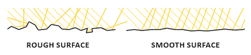</p>
<p></p>
<p><a href="https://avilapa.github.io/post/custom-engine-pbr/">[avilapa]</a></p>
<h4 id="diffuse-reflection">Diffuse Reflection</h4>
<p>A diffuse surface is one which scatters the incident light on a point on the surface equally in random directions.</p>
<p>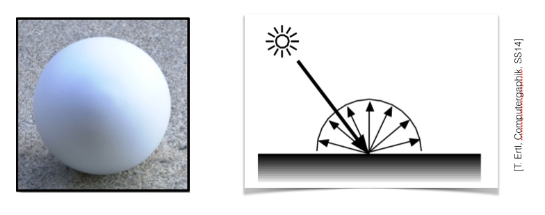</p>
<p>This is also called a <em>Lambertian</em> reflection, and the appearance of the Lambertian reflection does not depend on the position of the observer.</p>
<h4 id="specular-reflection">Specular Reflection</h4>
<p>For a <em>shiny</em> or <em>glossy</em> reflection there is a preferred angle of reflection, meaning more of the incident light is reflected in a certain angle than in other angles.</p>
<p></p>
<h4 id="full-specular-reflection-mirror-reflection">Full Specular Reflection (Mirror Reflection)</h4>
<p>For a full specular reflection all light is reflected in the same angle as the incoming angle.</p>
<p></p>
<h4 id="measured-diffuse-surface-reflection">Measured Diffuse Surface Reflection</h4>
<p>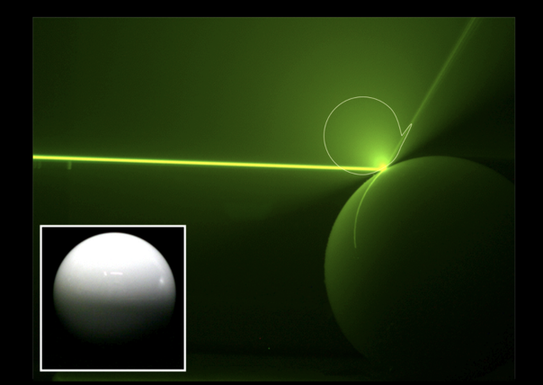 <a href="">[Hullin et al. 2008]</a></p>
<h4 id="measured-glossy-surface-reflection">Measured Glossy Surface Reflection</h4>
<p> <a href="">[Hullin et al. 2008]</a></p>
<h4 id="measured-layered-diffuse-glossy-surface-reflection">Measured Layered (diffuse / glossy) Surface Reflection</h4>
<p> <a href="">[Hullin et al. 2008]</a></p>
<h3 id="diffuse-reflection-1">Diffuse Reflection</h3>
<p>The Diffuse Reflection looks the same under all observation directions.</p>
<p></p>
<p>It only depends on the light direction.</p>
<h3 id="diffuse-reflection---light-direction">Diffuse Reflection - Light Direction</h3>
<p></p>
<p>As the angle between the normal vector and the light direction increases, the surface area illuminated by the beam of light (which stays the same) increases…</p>
<p>… and the intensity of the light per unit surface area <strong>decreases</strong>.</p>
<p>Depending on <span class="math inline"><em>θ</em></span>, we want to multiply the light intensity with a factor.</p>
<p>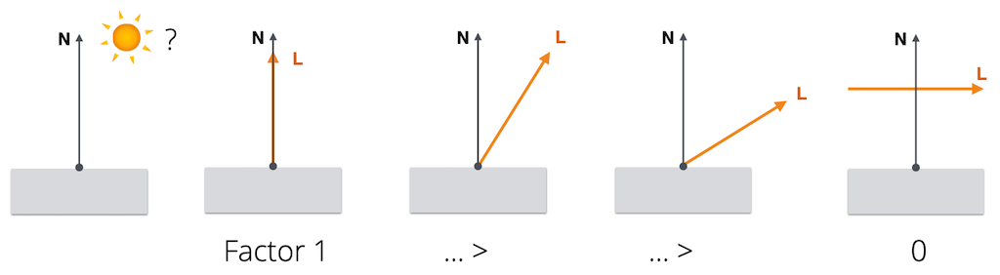</p>
<blockquote>
<p>Cosinus to the rescue!</p>
</blockquote>
<h3 id="lamberts-cosine-law">Lambert’s Cosine Law</h3>
<p>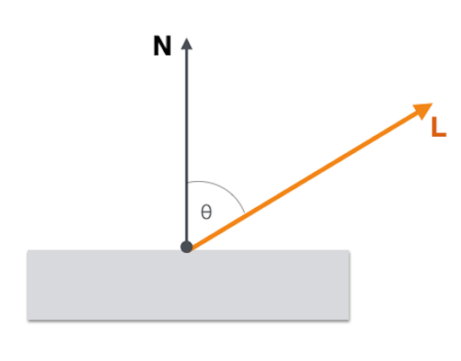<br />
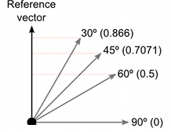</p>
<p><a href="https://docs.unity3d.com/Manual/UnderstandingVectorArithmetic.html">[Unity Manual]</a></p>
<p>Thus, we need to decrease in the intensity of the light (per unit surface area) by a factor of <span class="math inline"><em>c</em><em>o</em><em>s</em><em>θ</em></span>.</p>
<p>The value of <span class="math inline"><em>c</em><em>o</em><em>s</em><em>θ</em></span> is given by the dot product between the normal vector <span class="math inline"><em>N</em></span> and the unit direction to the light source <span class="math inline"><em>L</em></span>.</p>
<p><span class="math inline"><em>c</em><em>o</em><em>s</em><em>θ</em> = <em>L</em> ∙ <em>N</em></span></p>
<blockquote>
<p>What about:</p>
</blockquote>
<p>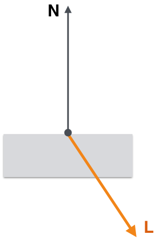</p>
<blockquote>
<p>Lucky us!</p>
</blockquote>
<p>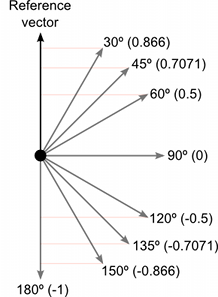</p>
<p><a href="https://docs.unity3d.com/Manual/UnderstandingVectorArithmetic.html">[Unity Manual]</a></p>
<p>A negative dot product means that the surface is facing away from the light source and should not be illuminated at all.</p>
<p>Thus, we clamp the dot product to zero in our illumination calculations.</p>
<p><span class="math inline"><em>m</em><em>a</em><em>x</em>(<em>L</em> ∙ <em>N</em>, 0)</span></p>
<p>This is the Lambertian Reflection.</p>
<h3 id="lambert-material">Lambert Material</h3>
<p>In order to compute a diffuse or lambertian material model, we simply use</p>
<div class="sourceCode" id="cb1"><pre class="sourceCode js"><code class="sourceCode javascript"><a class="sourceLine" id="cb1-1" title="1">light_diffuse <span class="op">*</span> <span class="at">max</span>(L ∙ N<span class="op">,</span> <span class="dv">0</span>)<span class="op">;</span></a></code></pre></div>
<p><em>Reminder:</em> <code>light_diffuse</code> is a rgb color in our context.</p>
<p>Or, if we have ambient light in the scene</p>
<div class="sourceCode" id="cb2"><pre class="sourceCode js"><code class="sourceCode javascript"><a class="sourceLine" id="cb2-1" title="1">light_ambient <span class="op">+</span> light_diffuse <span class="op">*</span> <span class="at">max</span>(L ∙ N<span class="op">,</span> <span class="dv">0</span>)<span class="op">;</span></a></code></pre></div>
<blockquote>
<p>What is still missing?</p>
</blockquote>
<h3 id="specular-reflection-1">Specular Reflection</h3>
<p></p>
<p>Surfaces tend to reflect light strongly along the path given by the reflection of the incident direction across the surface normal. This results in the appearance of a shiny highlight on a surface called a secularity.</p>
<p> <a href="">[Hullin et al. 2008]</a></p>
<p>Unlike the diffuse reflection, the specular reflection visible on a surface depends on the position of the viewer.</p>
<h3 id="reflection-vector">Reflection Vector</h3>
<p>The intensity of the specular reflection is related to the angle between the direction to viewer vector V and the direct reflection vector R.</p>
<p></p>
<p></p>
<p>Based on the given geometry, how can we model specular reflection now?</p>
<p>A model that recreates believable (but having almost no real physical basis) specular highlights uses again the cos function for modulation. ]</p>
<p><span class="math inline"><em>c</em><em>o</em><em>s</em><sup><em>n</em></sup><em>α</em> = <em>m</em><em>a</em><em>x</em>(0, <em>R</em> ⋅ <em>V</em>)<sup><em>n</em></sup></span></p>
<p>With n as a <em>shininess</em> exponent.</p>
<h4 id="specular-reflection---shininess-exponent">Specular Reflection - Shininess exponent</h4>
<p>The specular or shininess exponent n controls the sharpness of the specular highlight.</p>
<p>A small value of n produces a dull highlight that fades out over a relatively large distance, and a large value of n produces a sharp highlight that fades out quickly as the vectors V and R diverge.</p>
<p></p>
<h3 id="specular-material">Specular Material</h3>
<p>Now, we can compute the specular component of a shading model with</p>
<div class="sourceCode" id="cb3"><pre class="sourceCode glsl"><code class="sourceCode glsl"><a class="sourceLine" id="cb3-1" title="1">light_specular * <span class="bu">max</span>(<span class="dv">0</span>, R ∙ V)^n;</a></code></pre></div>
<p>A basic specular model could therefore look like:</p>
<div class="sourceCode" id="cb4"><pre class="sourceCode glsl"><code class="sourceCode glsl"><a class="sourceLine" id="cb4-1" title="1">light_ambient + shading_diffuse + light_specular * <span class="bu">max</span>(<span class="dv">0</span>, R ∙ V)^n;</a></code></pre></div>
<h2 id="phong-model">Phong Model</h2>
<p>What we just learned refers to one of the most famous and excessively used shading models, namely the <em>Phong</em> shading model.</p>
<p>The Phong model looks as follows:</p>
<p><span class="math inline"><em>I</em><sub><em>P</em><em>h</em><em>o</em><em>n</em><em>g</em></sub> = <em>I</em><sub><em>A</em></sub> + <em>I</em><sub><em>D</em></sub> + <em>I</em><sub><em>S</em></sub></span></p>
<p></p>
<p><span class="math inline"><em>I</em><sub><em>P</em><em>h</em><em>o</em><em>n</em><em>g</em></sub> = <em>I</em><sub><em>A</em></sub> + <em>I</em><sub><em>D</em></sub> + <em>I</em><sub><em>S</em></sub></span></p>
<p>With the components modelled as</p>
<p><span class="math inline"><em>I</em><sub><em>A</em><em>m</em><em>b</em><em>i</em><em>e</em><em>n</em><em>t</em></sub> = <em>k</em><sub><em>a</em></sub></span></p>
<p><span class="math inline"><em>I</em><sub><em>D</em><em>i</em><em>f</em><em>f</em><em>u</em><em>s</em><em>e</em></sub> = <em>k</em><sub><em>d</em></sub><em>m</em><em>a</em><em>x</em>(<em>N</em> ⋅ <em>L</em>, 0)</span></p>
<p><span class="math inline"><em>I</em><sub><em>S</em><em>p</em><em>e</em><em>c</em><em>u</em><em>l</em><em>a</em><em>r</em></sub> = <em>k</em><sub><em>s</em></sub><em>m</em><em>a</em><em>x</em>(<em>R</em> ⋅ <em>V</em>, 0)<sup><em>n</em></sup></span></p>
<p></p>
<p>We can now define how much of an incoming light intensity is reflected on a surface point for a certain view vector.</p>
<p>For an incoming light I</p>
<p><span class="math inline"><em>I</em><sub><em>P</em><em>h</em><em>o</em><em>n</em><em>g</em></sub> = <em>k</em><sub><em>a</em></sub> + <em>k</em><sub><em>s</em></sub><em>m</em><em>a</em><em>x</em>(<em>R</em> ⋅ <em>V</em>, 0)<sup><em>n</em></sup><em>I</em> + <em>k</em><sub><em>s</em></sub><em>m</em><em>a</em><em>x</em>(<em>R</em> ⋅ <em>V</em>, 0)<sup><em>n</em></sup><em>I</em></span></p>
<p>This is also called a <strong>BRDF</strong>, or better in this case the <strong>Phong BRDF</strong>.</p>
<p>We will come back to this.</p>
<hr />
<h3 id="the-end-of-day-1">The End of Day 1</h3>
<h2 id="section">🤓</h2>


</article>
